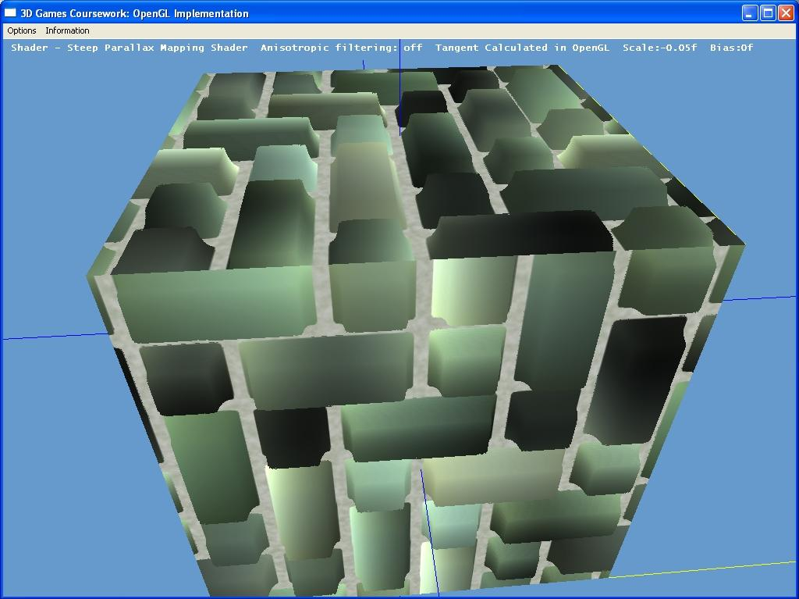
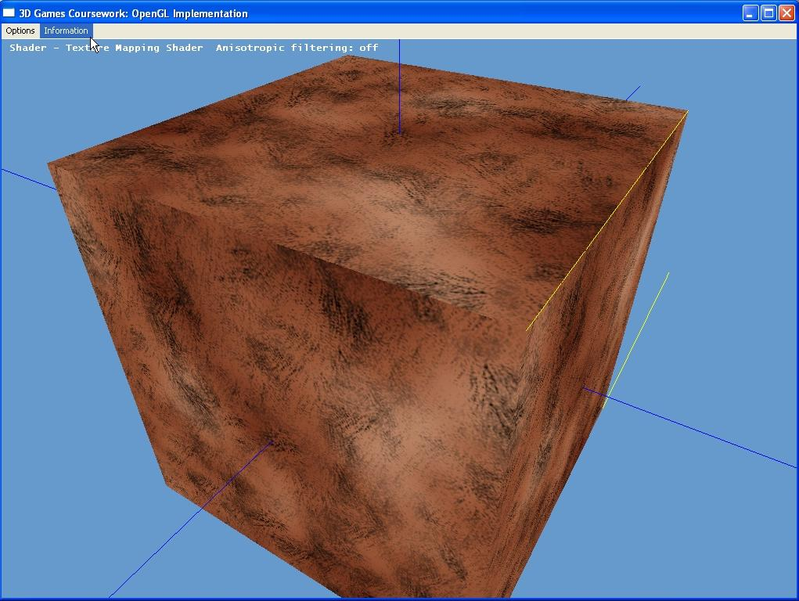
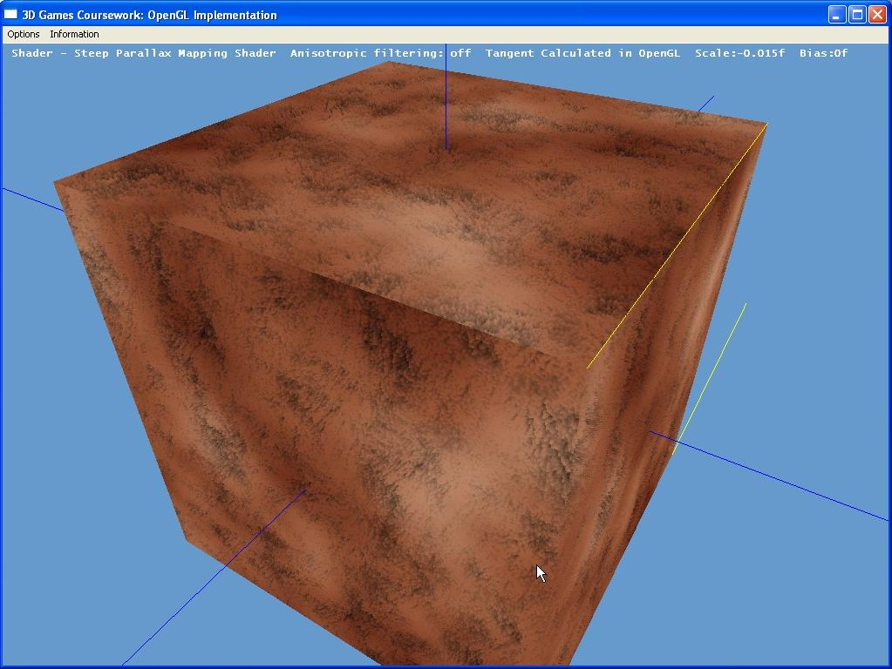

Shader Coursework Application

Parallax mapping using raytracer

Texture mapped cube (fur texture)

Parallax shading on cube to create more realistic fur
This project was developed to focus on development of hardware accelerated algorithms. I learnt a lot about balancing the use of GPU's and CPU's for rendering on the course.
I implemented bump mapping and variations on parallax mapping, the best of which used ray tracing to take a 2D image and make it look 3D. From this work I implemented parallax occlusion mapping for my other 3d demo. Win32 code was used to make texture loading easier via a dialogue. The open source jpeg lib was used in order to provide suppport for this format but other image import routines were written by myself. I managed to produce a better simulation of fur with the shader as you can see from screenshots above.
I also made use of tools such as Shader designer to help with debugging, and ATI's normal map generator for bump mapping textures. Looking back it would have made more sense to use code to produce these textures.
<< Back